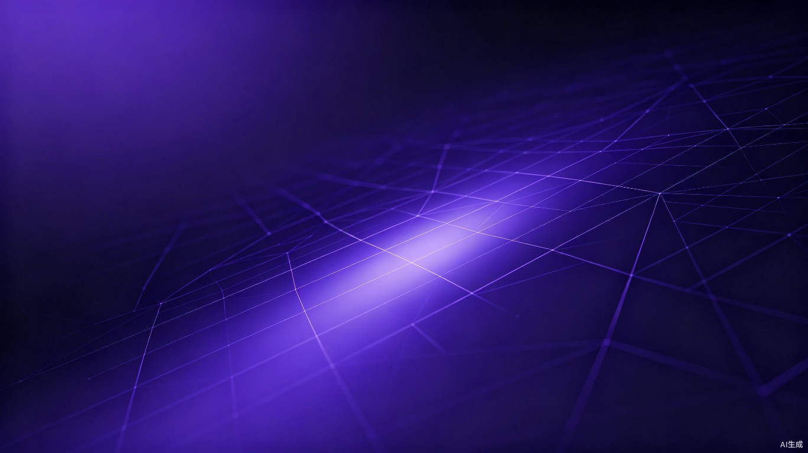

核心能力
从架构层面构建安全管控基座，每一项能力都为生产环境设计
安全管控
Ed25519 非对称签名、Argon2id 密码哈希、AES-256-GCM 字段加密，全链路安全原语
站点隔离
域名解析租户，所有数据按站点组隔离，中间件层强制过滤，杜绝跨租户泄漏
异步高性能
Granian + FastAPI + SQLAlchemy Async 全异步栈，App Shell 边缘缓存，零阻塞响应
插件系统
原生插件架构，支持路由注册、服务提供、UI 扩展与事件钩子，按需扩展能力